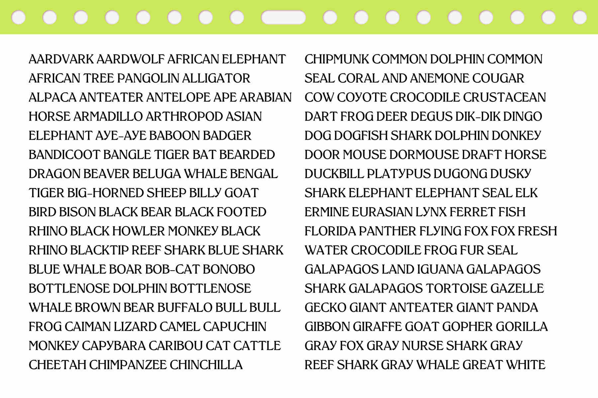
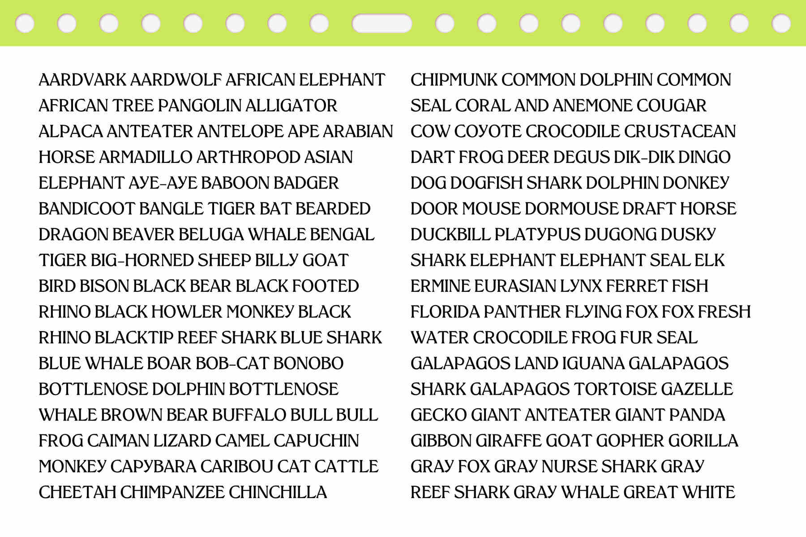

Klenkens
Laimė Lukošiūnaitė
Klenkens is a revival of the redrawn version of Kleukens Antiqua, where both medieval letterforms and Art Nouveau sensibilities meet, released by Bauer in
1910. Klenkens’ stems swell towards a chiseled wedgyness that brings a loudness of typefaces used in the 1960-70s. The
“G” is slumpy, with a crane-like neck, the “r” curls into a claw-like terminal and the “A” carries shuffle-footed inward
facing serifs; all details drawing it closer the sinuous curves in nature, inclining to wag along with Art Nouveau. It’s
fancy in its own right, straddling the coat-tails of its original heroed, ornate typeface of that decade.
Kleukens Antiqua was released in the last year of the Art Nouveau movement, when Friedrich Wilhelm Kleukens and his
colleagues left the aesthetic ideals of Art Nouveau behind them, freeing typographic form from the elaborate
ornamentation and pushed their ideas of artistic modernity.
I came across this simplified version of Kleukens Antiqua in a type specimen from a Lithuanian foundry called “Lightning”, under the name of
Klenkens. I love the approach of simply flipping the letter “u” for a quick name change. Klenkens is a possible
localisation of the original Kleukens, that renders the personality of the original lavishly decorated 1910 type more
casual. It seems that even if the original matrix was imported into the Lithuanian foundry, it was not copied letter by
letter, but redrawn, as not all of the letters bear the same exact design.
"Lightning" was a printing house and a foundry that operated in Lithuania from 1919–48, printing in-house publications,
student newspapers, art, culture and radio magazines. During the period of the Nazi occupation, they printed weekly
liberation-oriented publications. In 1944, part of the employees of the printing house left for Germany and taking part
of the equipment, they continued to print Lithuanian newspapers in the refugee camps there. The foundry's specimen is
all set in Klenkens, which may lead us to believe that it was favored in-house at the foundry, highly intended for sale.
The history behind the German-Lithuanian assimilation runs deep through the world of clandestine publishing houses in
Lithuania-Minor region (former East Prussia populated by ethnic Lithuanians up to 1945), where a lot of forbidden
literature was printed during the Lithuanian press ban. This is when Lithuanian book carriers smuggled Lithuanian
language books printed in the Latin alphabet into Lithuanian-speaking areas of the Russian Empire, defying a ban on such
materials in force from 1864 to 1904. Opposing imperial Russian authorities' efforts to replace the traditional Latin
orthography with Cyrillic, and transporting printed matter from as far away as the United States to do so, the book
smugglers became a symbol of Lithuanians' resistance to Russification.
There were many intricate cultures that formed in this region, from the Curonians, 13c. pagan tribe living on the Baltic
Sea shores, to the swamp dwellers, who migrated in 19c. after Prussia and Germany adopted the state programs of internal
colonization and the creation of marshland colonies, the mass absorption of large high marshes in Lithuania Minor began.
The Klenkens typeface has re-traced these layered folk histories that have been channeled into sketch work and photos
during my residency in that same region this spring.
 
